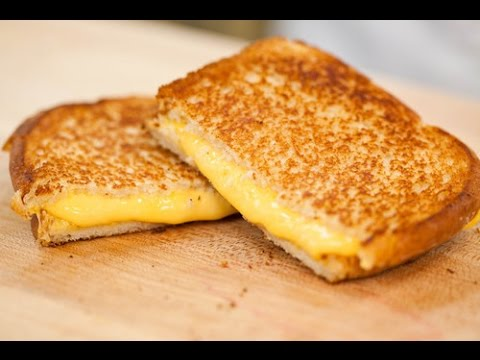
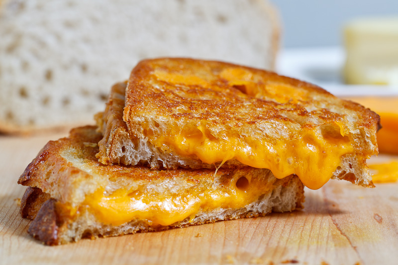
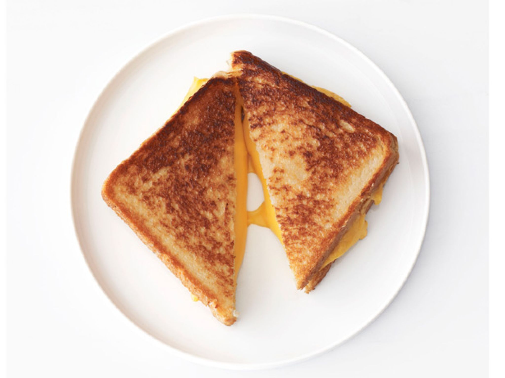

Grilled Cheese Sandwhich



Ingredients:
- 4 slices white bread
- 3 tablespoons butter, divided
- 2 slices Cheddar cheese
Directions:
- 1. Preheat skillet over medium heat.
- 2. Generously butter one side of a slice of bread. Place bread butter-side-down onto skillet bottom and add 1 slice of cheese
- 3. Butter a second slice of bread on one side and place butter-side-up on top of sandwich
- 4. Grill until lightly browned and flip over; continue grilling until cheese is melted
- 5. Repeat with remaining 2 slices of bread, butter and slice of cheese